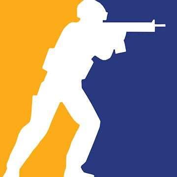
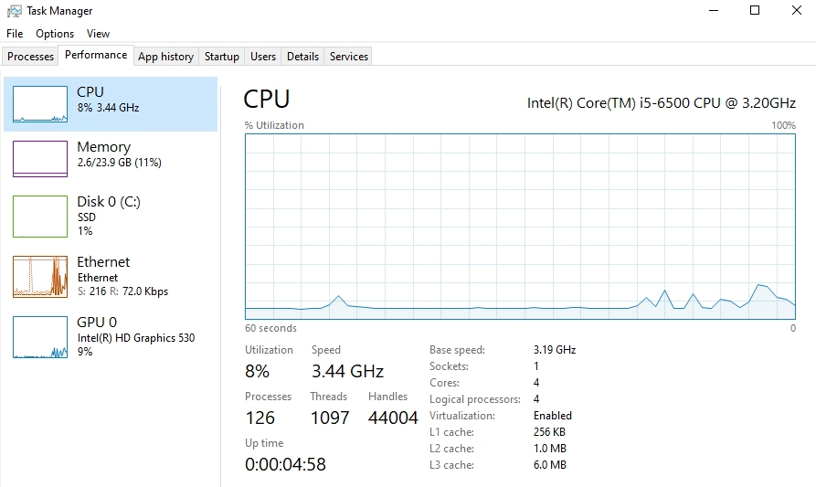

Abra o CS2
Inicie o Counter-Strike 2 pela Steam normalmente.

SERVIDOR COMUNITÁRIO • CS2
Um servidor feito para jogar, treinar e se divertir com a comunidade. Veja como entrar, confira os comandos, skins e acompanhe cada atualização. Com fy_pool_day no modo Mata Mata
PRIMEIROS PASSOS
Inicie o Counter-Strike 2 pela Steam normalmente.
Abra o console pressionando '.
Use o comando abaixo para entrar diretamente.
GUIA DO SERVIDOR
Digite os comandos no chat geral (Y) ou no chat de time (U).
!ajuda
Mostra todos os comandos disponíveis
!comp
Muda para o modo competitivo
!treino
Muda para o modo treino
!dm
Muda para o modo mata-mata
!map "nome do mapa"
Muda para o mapa selecionado
!r
Joga a última granada novamente
!smoke
Acelera o tempo para apagar a smoke
PERSONALIZAÇÃO
Escolha as skins das suas armas e facas e use elas dentro do servidor.
No site de skins, faça login com a sua conta Steam para suas escolhas ficarem salvas.
Selecione a skin de cada arma e, se quiser, ajuste o desgaste e o seed em Settings.
As skins carregam ao entrar. Se alguma não aparecer, digite !wp no chat.
Cada lado tem a sua própria seleção, então você pode usar skins diferentes como TR e como CT. Armas exclusivas de um lado, como AK-47 e M4, valem mesmo se você pegar do chão.
O modelo da faca é escolhido no topo de cada lado, e as skins dela ficam na aba "Skins de faca", que abre e fecha.
Em Settings você escolhe o desgaste, de Factory New a Battle-Scarred, e o seed (de 0 a 1000), que muda o padrão da skin.
!ws
Mostra quase todos os comandos disponíveis relacionados a Skins
!skins
Muda a Skin de certa Arma/Faca selecionada
CHANGELOG
PC do Servidor Atualizado de 4GB para 24GB
INFORMAÇÕES IMPORTANTES
Informações importantes sobre o servidor e possíveis mudanças.
O PC Do Servidor Possui um i5 6500, 24GB RAM DDR3L, HD530, SSD SATA 256B

Esse servidor está sendo feito apenas por praticidade e experimentos, portanto não haverá uma estrutura muito profissional. Espere crashes, erros e bugs enquanto usa o servidor. Qualquer um encontrado, ficarei feliz em saber e tentarei consertar o quanto antes.
O Servidor sempre reinicia no seguintes horarios: 17:00, 21:00, 2:00, 8:00, 12:00. caso voce seja desconectado provavelmente é só so servidor reiniciando e estará de volta em poucos minutos. Esta programação pode ser interrompida, mas nao seria recomendado deixar o servidor sem reiniciar por muito tempo, por isso somente irei desligar caso haja uma ocasião especial
Este servidor utiliza banco de dados (SQL), onde informações de jogadores são armazenadas. Caso haja algum vazamento, me responsabilizo totalmente por isso. Creio que essas informações não sejam de alto risco e tentarei manter tudo o mais seguro possível para todos.
CONTATO
Entre em contato comigo caso tenha algum problema ou dúvida sobre o servidor.